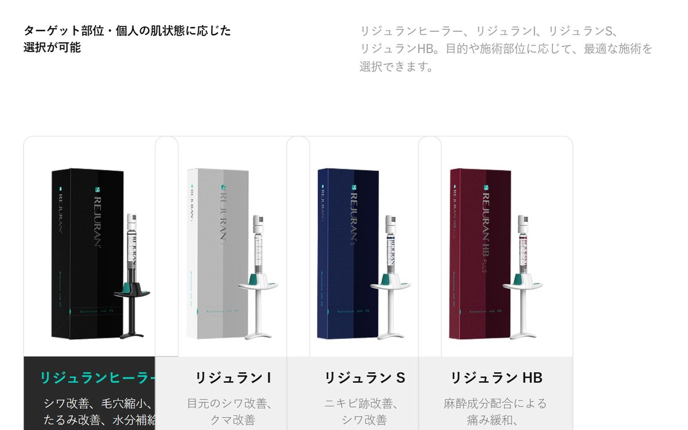
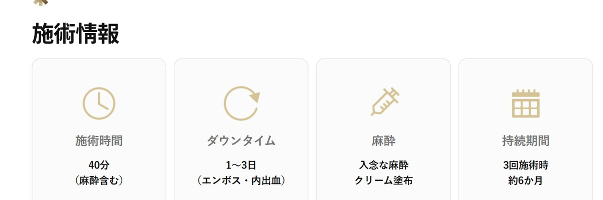
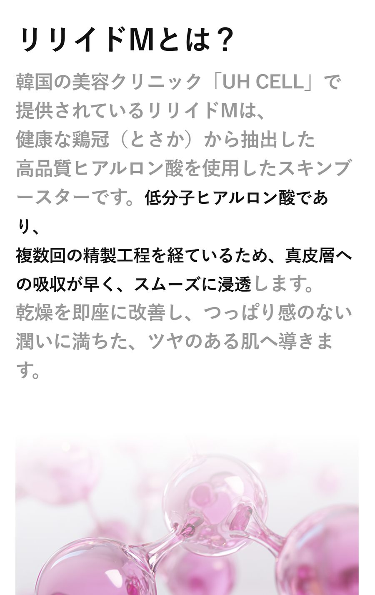

韓国で受けるスキンブースター リジュランと水光注射の違い
韓国の美容クリニックでは、肌の内側に成分を注入する「スキンブースター」が定番のメニューになっています。日本から数日の旅行で受ける人が多いのが、リジュランと水光注射です。どちらも細い針で肌に注入する施術ですが、使う成分も、得意とする悩みも少しずつ違います。
ここでは江南のクリニックが公開している施術情報を参考に、2つの違いと、旅行の日程に組み込むときに気をつけたい点を整理しました。
リジュランはサーモン由来のPN製剤
リジュランは、サーモンのDNAから不純物を取り除いて得られるPN（ポリヌクレオチド）を主成分とする注入剤です。肌の線維芽細胞に働きかけてコラーゲンやエラスチンの生成を促し、肌が自分で回復する力を引き出すとされています。荒れやすい肌の鎮静、インナードライ、小ジワ、毛穴など、肌そのものの調子を立て直したい人に選ばれています。
製剤にはいくつか種類があります。顔全体に使うリジュランヒーラーのほか、目元用のリジュランI、ニキビ跡向けのリジュランS、麻酔成分を配合して痛みをやわらげたリジュランHBなどです。

江南のUH CELLが公開している韓国リジュランの施術ページでは、施術時間は麻酔を含めて約40分、ダウンタイムは1〜3日（エンボスや内出血）、3回受けた場合の持続期間は約6か月と案内されています。

水光注射はヒアルロン酸で水分を補う
水光注射は、ヒアルロン酸などを真皮層に細かく注入して肌の水分量を高める施術をまとめた呼び方です。韓国ではツヤのある「水光肌」をつくる施術として広く知られています。
使う製剤はクリニックによって異なります。たとえばUH CELLの韓国水光注射のメニューでは、鶏冠（とさか）から抽出した低分子ヒアルロン酸を使うリリイドMを採用しています。粒子が細かく吸収が早いため、ボコボコ感や腫れが出にくいのが特徴だそうです。施術時間は30〜40分、ダウンタイムは1〜3日、持続期間は2〜3か月とされています。

2つを並べてみると
| リジュラン | 水光注射（リリイドM） | |
|---|---|---|
| 主な成分 | サーモン由来のPN | 低分子ヒアルロン酸 |
| 向いている悩み | 肌荒れ、小ジワ、毛穴、ハリ不足 | 乾燥、ツヤ不足、メイク崩れ |
| 施術時間 | 約40分（麻酔含む） | 30〜40分（麻酔含む） |
| ダウンタイム | 1〜3日（エンボス・内出血） | 1〜3日（ボコボコ感・内出血） |
| 持続期間の目安 | 3回で約6か月 | 2〜3か月 |
数値はUH CELLの施術案内による目安です。肌の状態によって変わります。
肌の再生力を底上げしたいならリジュラン、まず乾燥とツヤをどうにかしたいなら水光注射、と考えると選びやすくなります。迷ったときは、カウンセリングで今の肌の状態を見てもらってから決めても遅くありません。
旅行中に受けるときの注意
- 注射の跡（エンボス）や内出血が1〜3日ほど残ることがあります。帰国日や大事な予定の直前は避け、滞在の前半に予約しておくと安心です。
- 施術当日はサウナや激しい運動、飲酒を控えるよう言われることが多いので、夜の予定は軽めにしておきましょう。
- 機内は乾燥しやすいため、帰りの便では保湿を多めにするのがおすすめです。
- 肌の状態によっては、当日のカウンセリングで別の製剤をすすめられることもあります。
施術の合間のホームケア
リジュランには化粧品のラインもあり、日本ではREJURAN 公式 楽天市場店で購入できます。次の施術までの間、毎日のスキンケアに取り入れている人もいます。